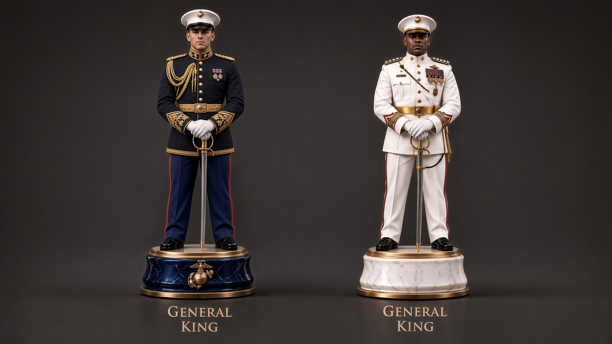
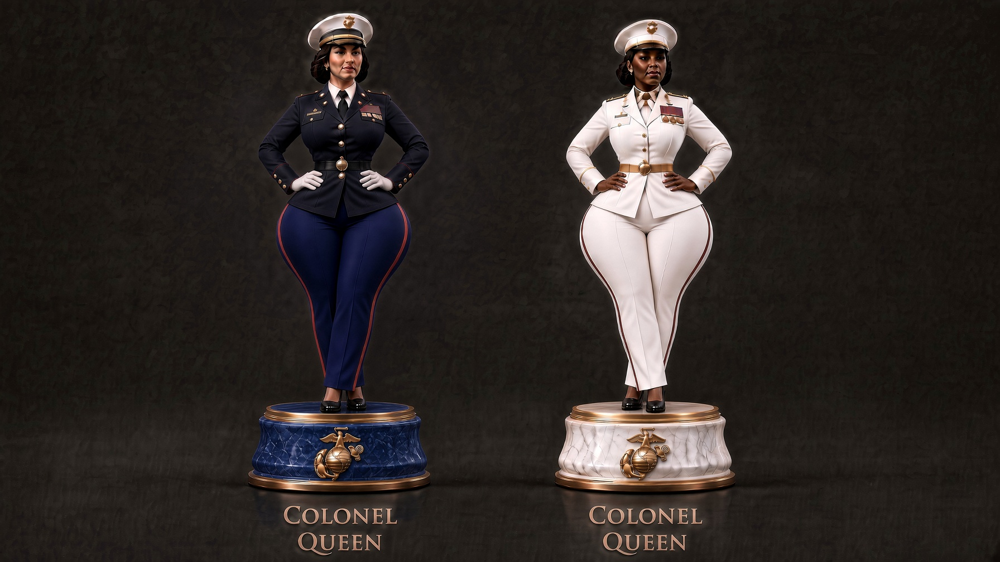
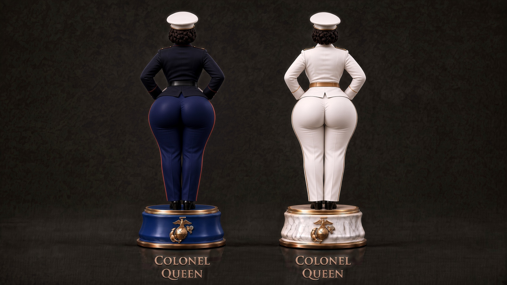
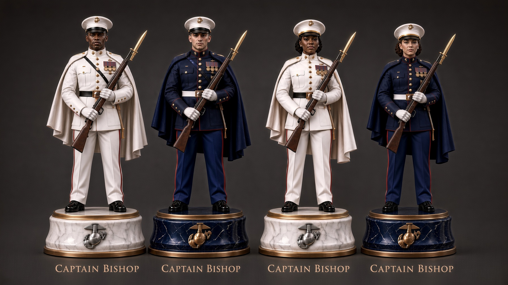
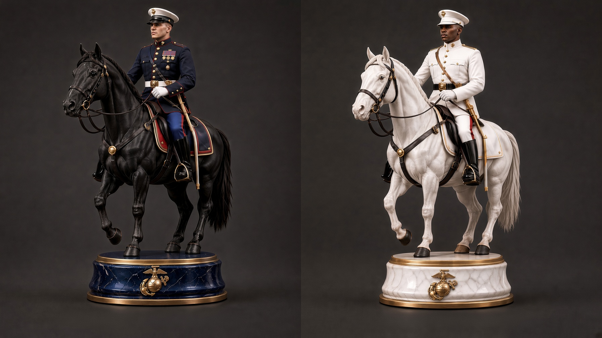
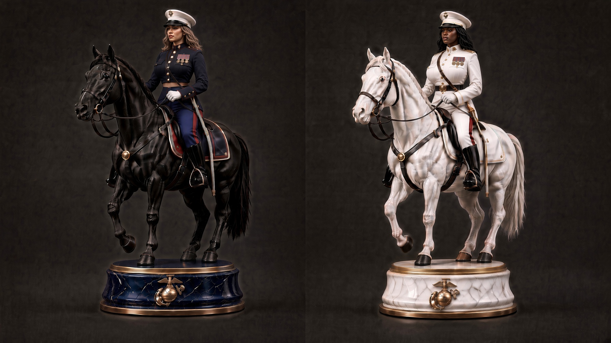
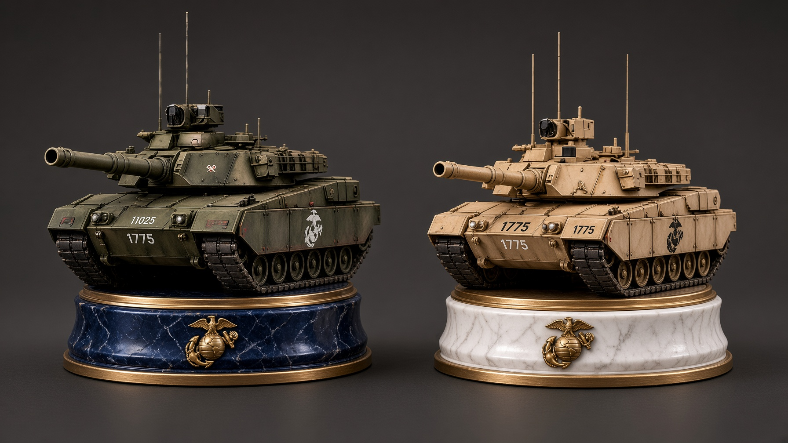
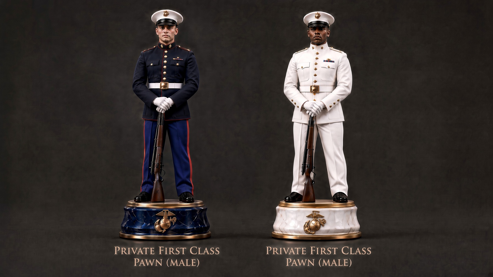
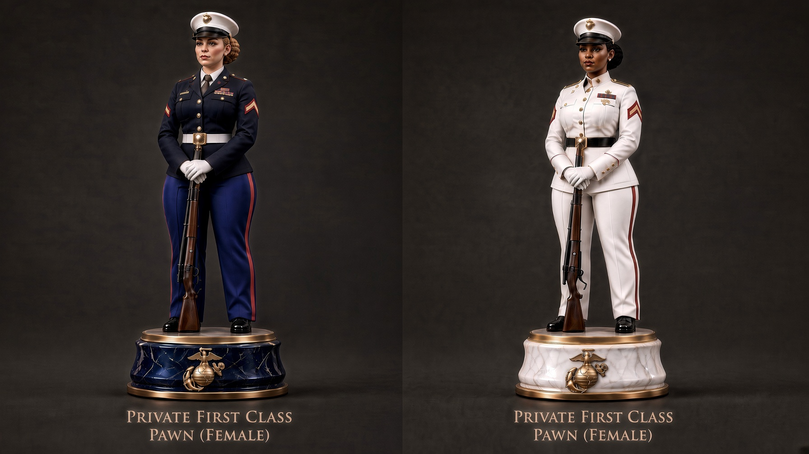

King · General

Queen · Colonel — front

Queen · Colonel — rear

Bishop · Captain

Knight · First Lieutenant — male

Knight · First Lieutenant — female

Rook · Tank

Pawn · PFC — male

Pawn · PFC — female
